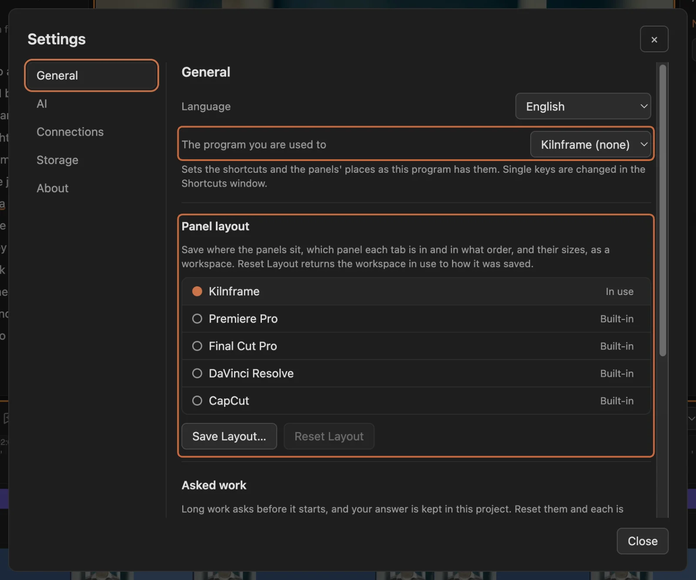
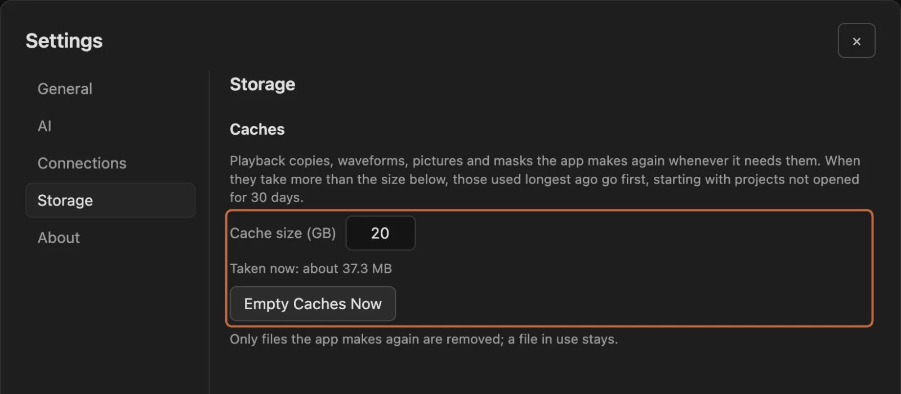
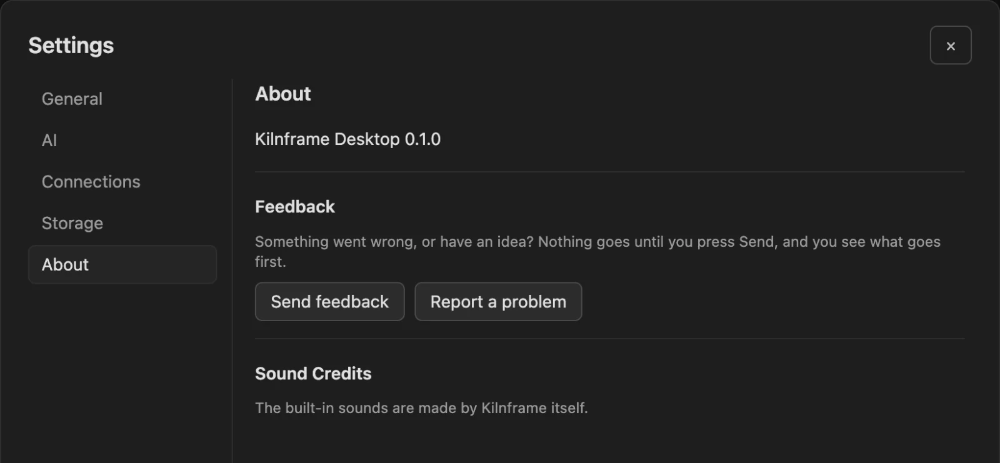

Settings
Settings, in the top bar (⌘ ,), has five tabs.
General
- Language: English, Turkish, or Automatic (system).
- The program you are used to: the panels and keys of Premiere Pro, Final Cut Pro, DaVinci Resolve or CapCut (The editor window).
- Panel layout: your workspaces, Save Layout… and Reset Layout.
- Asked work: Reset Answers to Asked Work (Running work and asked work).
- Tour: Take the Tour Again and Open Sample Project.
- Updates: your version and Check for updates (Updates).

AI
- AI Model: the provider and the model (Claude or ChatGPT plan, API keys, Local models).
- Animations: Draw straight away, without showing the stills (Animations).
- Transcript: on this computer or in the cloud (Cloud transcription).
- The other keys: Narration and Music (Gemini), OpenAI (Transcript) and ElevenLabs, with Find Extra Voices.
Connections
Connect AI assistants (MCP) (Connect AI assistants).
Storage
Caches: playback copies, waveforms, pictures and masks the app makes again whenever it needs them. When they take more than Cache size (GB), those used longest ago go first, starting with projects not opened for 30 days. Taken now shows how much they take; Empty Caches Now removes only files the app can make again.

About
The version, Send feedback and Report a problem (Report a problem), and Sound Credits. On Windows and Linux a Beta note says where to report problems.
